- 생성 AI는 연구에 큰 도움이 됩니다.
- 원하는 정보를 빠르게 찾아주기도 하고, PDF 파일도 읽을 수 있습니다.
- 그러나 명백한 근본적 한계가 있습니다.
1. 생성 AI 연구 활용 도구
ChatPDF
Connected Papers
Consensus
Elicit
ExplainPaper
Litmus
Perplexity
Paperpile
research rabbit
Scispace
scite
Scopus AI
Web of Science AI Research Assistant
- 연구에 활용할 수 있는 생성 AI 도구가 매우 많습니다.
- 다양한 논문 데이터베이스에 접근하거나 PDF 파일을 읽고,
- 내용과 인용 네트워크를 그려주는 등 번거로운 일을 자동화해줍니다.
- 그리고, 도구별로 특색이 있습니다.

- 이런 도구들을 사용하면 논문을 빨리 읽을 수 있고,
- 낯선 분야의 논문도 훨씬 수월하게 읽을 수 있습니다.
- 내용을 머리에 다져넣기보다 행정 문서 작성을 위해 빠르게 파악해야 할 때 진가가 발휘됩니다.
- 그러나 모든 도구가 그렇듯 근본적인 한계가 있습니다.
- 이를 알고 장점을 활용해야 큰 실수를 하지 않습니다.
2. Q. Perovskite/Silicon tandem 태양전지의 최대 효율은?
EPFL: Perovskite Cells for Tandem Applications
The Renewable Energy Institute: World Record Smashed in Major Breakthrough for Solar Panel Efficiency
PR Newswire: LONGi sets a new world record of 33.9% for the efficiency of crystalline silicon-perovskite tandem solar cells
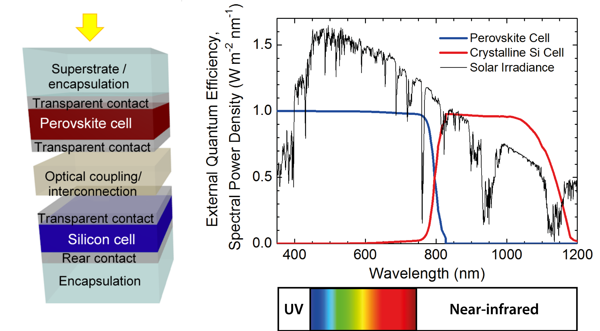
- Perovskite/Silicon tandem 태양전지는 태양전지의 효율을 높이고자 하는 여러 시도 중 하나입니다.
- 이 질문에 대한 답을 연구용 생성 AI를 통해 잘 찾을 수 있을까요?
- 먼저 정답을 말하자면 현 시점(24.05.24.)에서 33.9%입니다.
- 중국 기업인 LONGi가 KAUST의 33.7%를 넘는 기록을 세웠습니다.
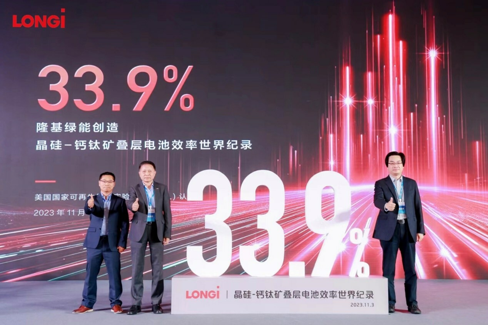
3. AI를 포함한 웹 검색은 답을 찾을 수 있을까?
- 일반 검색 엔진인 Google과 Bing,
- 그리고 검색 기능이 있는 생성 AI인 Gemini와 MS Copilot에게 물어봅니다.
What is the world record of Perovsite-silicon tandem solar cell?
3.1. Google, Gemini
- 33.9%를 잘 찾습니다.
- 그러나 Gemini의 답변은 논문이나 보고서에 쓸 수 없습니다.
- 출처를 알려주지 않기 때문입니다.
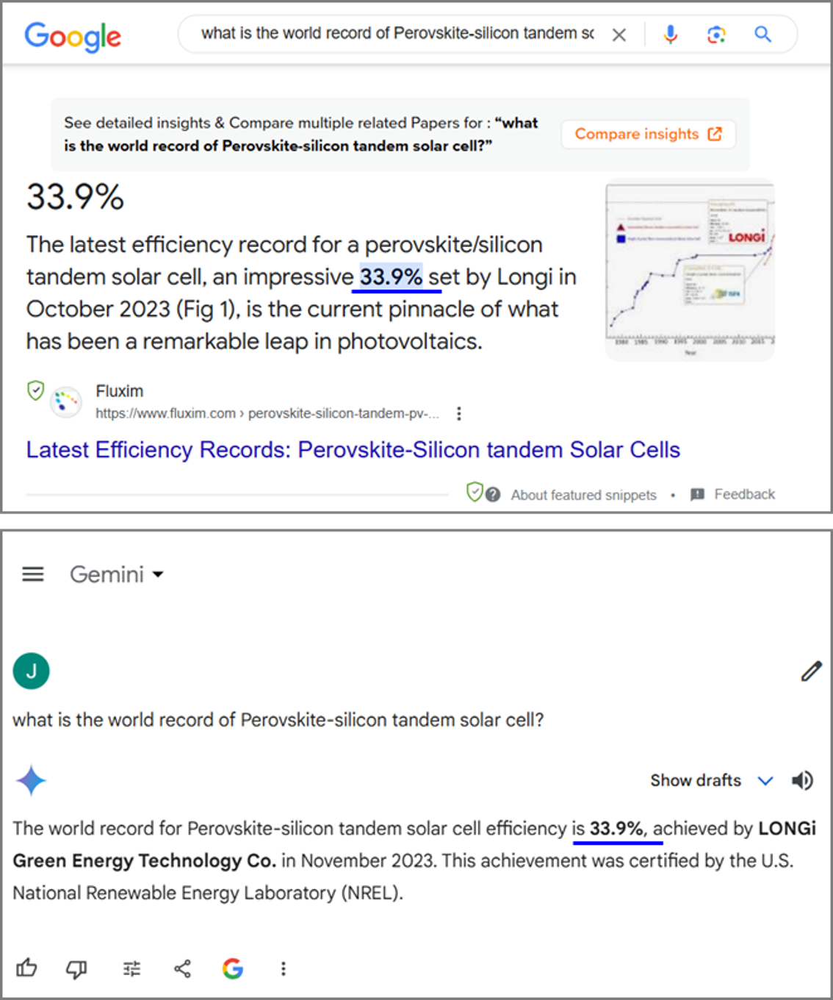
3.2. Bing, MS Copilot
- 역시 잘 찾습니다.
- Bing이 답을 보여주기 전에 너무 많은 광고를 보여주는 것이 불만입니다.
- 하지만 차분히 찾아보면 올바른 답을 볼 수 있습니다.
- Bing과 Copilot 모두 출처를 잘 보여주어 확인이 가능합니다.
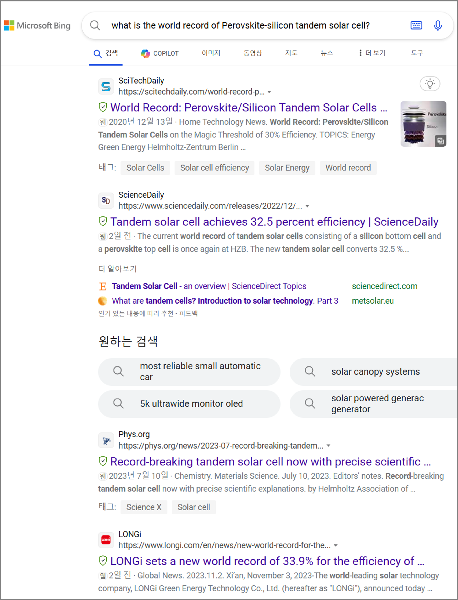
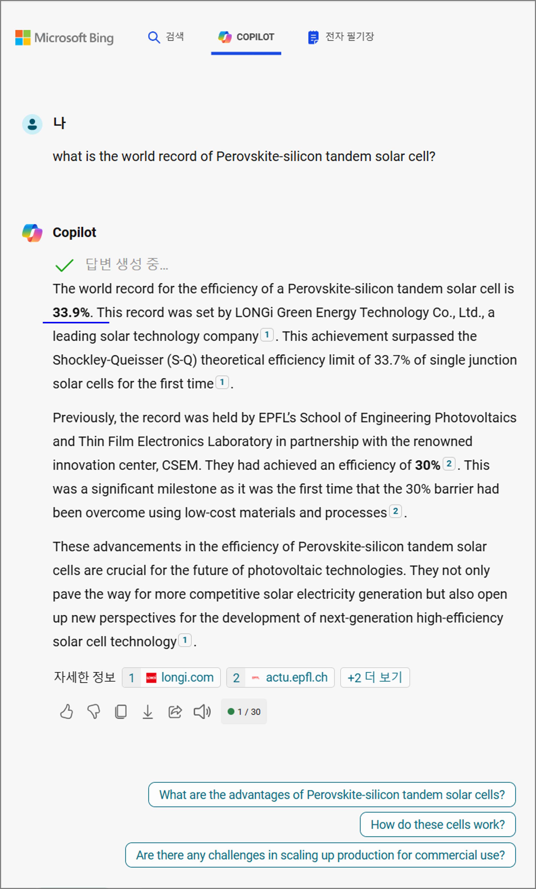
4. 생성 AI 도구는 답을 잘 찾을 수 있을까?
- ChatGPT의 Explore GPTs 메뉴로 가면 특정 목적에 특화시킨 GPT들을 볼 수 있습니다.
- Research & Analysis를 고르면 다양한 도구들이 나오는데,
- 2억편 이상의 논문을 검색할 수 있음을 뽐내고 있습니다.

- 이 네 개의 연구용 생성 AI에게 같은 질문을 해 보았습니다.
4.1. Scholar GPT
- 29.8%라고 합니다. 오답입니다.
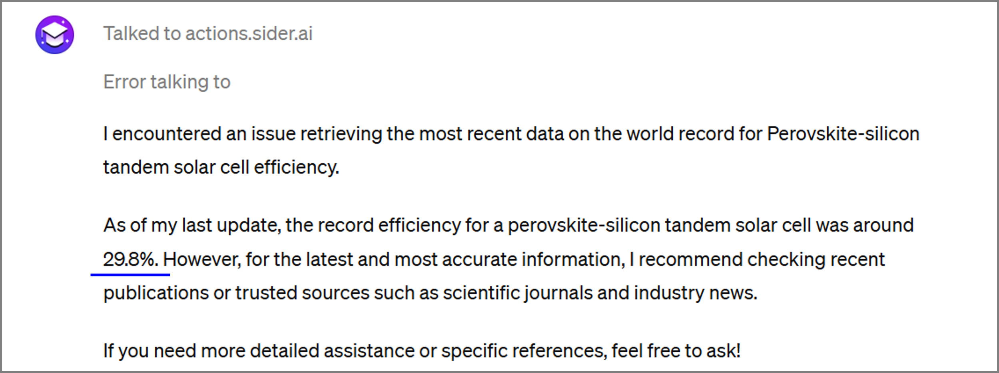
4.2. Consensus
- 31.25%라고 합니다. 오답입니다.
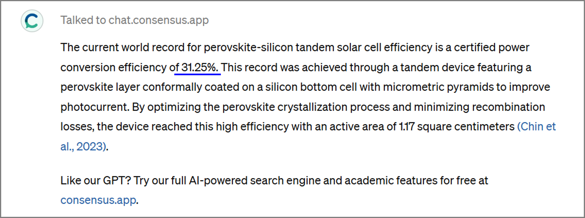
4.3. Scholar AI
- 33.7%라고 합니다. 오답입니다.
- 그런데 조금 아깝습니다. 바로 직전의 기록입니다.
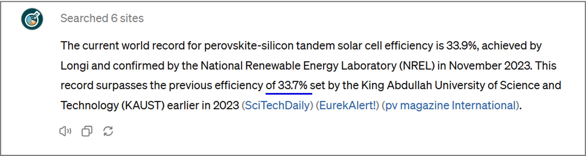
4.4. scispace
- 31.25%라고 합니다. 역시 오답입니다.
- 여러 레퍼런스를 올바르게 주지만 정답은 없습니다.
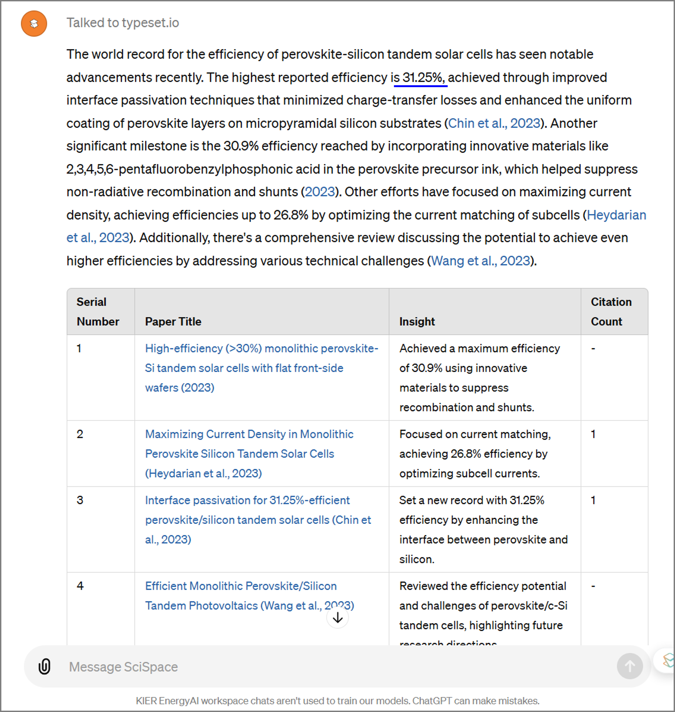
5. 왜 이러는 걸까요?
- 환각은 아닐 확률이 높습니다.
- 연구용 생성 AI는 모든 답변에 레퍼런스를 기본으로 가져오기 때문입니다.
- 간혹 환각이 발생하긴 하지만 확률은 매우 낮습니다.
- 참고하는 데이터베이스에 근본적인 한계가 있습니다.
- 현재 다양한 기관에서 논문 데이터베이스를 운영하고 있습니다.
- 목적이 다른 경우도 있고 분야가 다른 경우도 있습니다.
- 이 중 대부분은 비용을 내야 활용할 수 있는 Licensed DB입니다.
- 그리고 일부 Open Access DB가 있습니다.

- 분야에 따라 Open Access DB가 주요 DB로 기여하기도 합니다.
- 그러나 제가 속한 분야를 비롯한 많은 분야는 Open Access로 부족한 경우가 많습니다.
- 태양광도 이와 같은 분야이며, Open Access DB만으로는 제대로 된 결과를 얻기 힘듭니다.
- 그리고 이번 사례는 연구기관이 아닌 기업의 성과입니다.
- 뉴스로는 보도되었으나 논문으로는 나오지 않았기 때문에 논문 검색으로는 답이 나오지 않습니다.
- Perplexity를 활용한 아래 검색에서 이를 확인할 수 있습니다.
5.1. Perplexity | Focus = All
- 모든 소스를 찾아보라는 조건에서 정답 33.9%를 찾습니다.
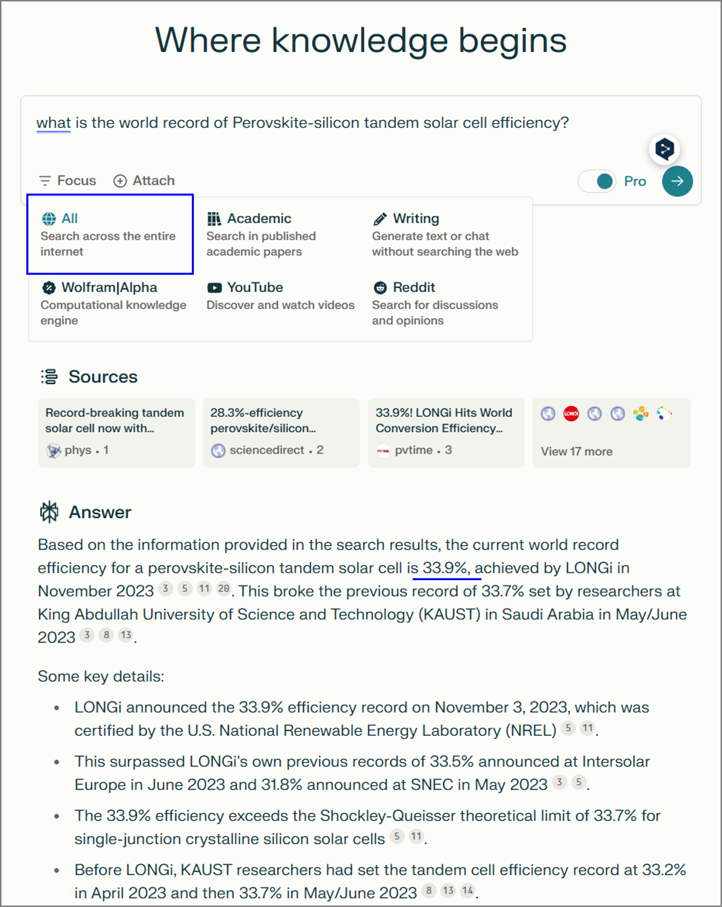
5.2. Perplexity | Focus = Academic
- Perplexity의 소스 지정 명령을 활용해 학술문헌만 검색시킵니다.
- 그리고 오답 33.7%를 찾습니다.
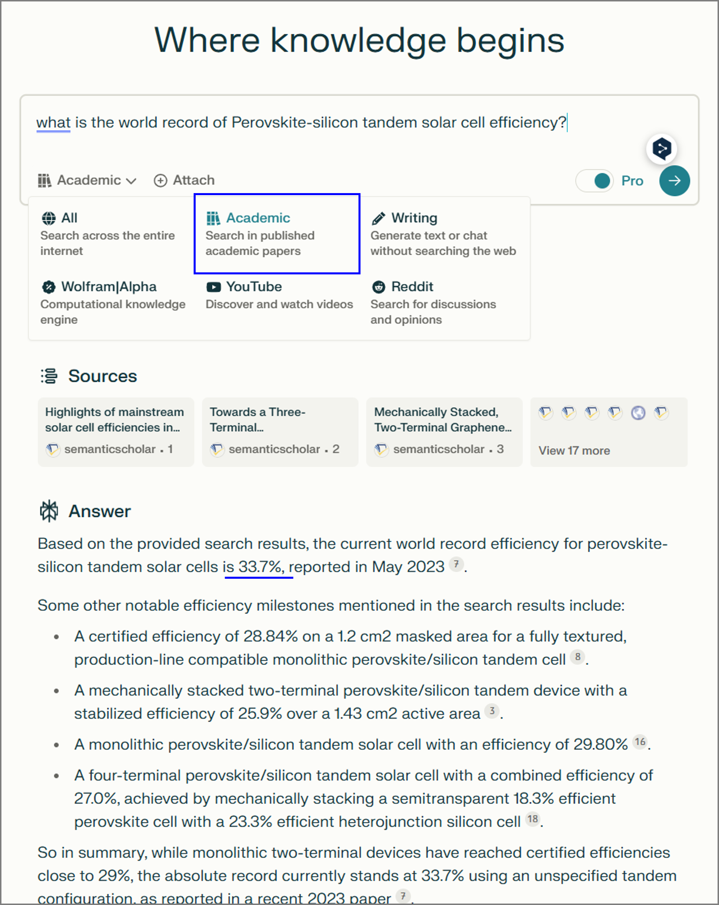
6. 제언
- 이와 같이 정보 출처의 영향으로 인해 검색 결과가 제한됩니다.
- 아무리 생성 AI가 GPT3.5에서 4, 4o를 거치며 성능이 향상되어도,
- 좋은 재료를 구할 수 없으면 좋은 음식을 만들 수 없듯 답변에 한계가 생깁니다.
- 연구자들은 본인 분야의 특성을 파악하여 올바른 소스에 접근하고,
- Licensed DB를 사용해야 하는 연구자는 적법한 절차를 거쳐 원문을 내려받아야 합니다.
- 그리고 scispace나 ChatPDF, research rabbit등
- PDF를 사용할 수 있는 도구를 이용해야 합니다.
기존 도구의 성능에 한계가 느껴진다면 스스로 도구를 만들어볼 수도 있습니다.
생성 AI를 올바른 방식으로 활용하시어 좋은 성과를 얻으시기 바랍니다.
관련 자료를 정리하여 PDF 파일을 공유합니다 : 다운로드 링크